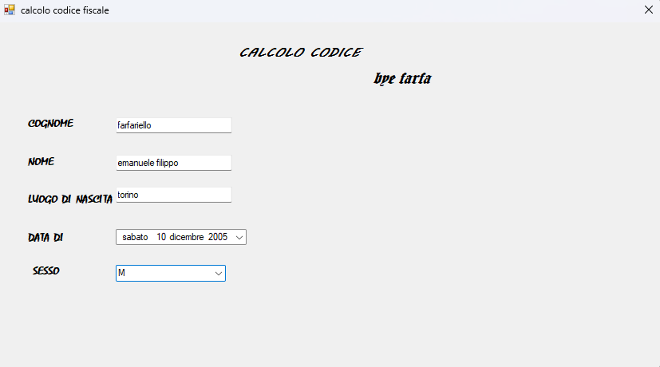
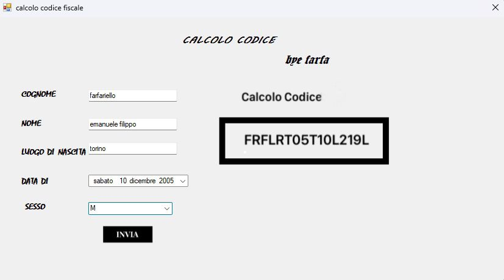

anno 2022 - 2023
Nel quarto anno del mio percorso di formazione presso l'Istituto Agnelli, come già detto nella biografia è stato per me l'anno più difficile. nonostante questo , ci siamo concentrati su tre temi principali: la cybersecurity, Peppino Impastato, il codice fiscale in c#, la pena di morte e Alda Merini
Peppino Impastato
Peppino Impastato è stato un attivista siciliano noto per la sua opposizione alla mafia. Nato nel 1948 a Cinisi, si è dedicato a denunciare le attività mafiose attraverso la sua emittente radiofonica, Radio Aut, utilizzando l'ironia e la satira per smascherare i potenti locali. Nonostante le minacce, ha continuato la sua lotta fino a quando è stato assassinato dalla mafia nel 1978. La sua vita e il suo impegno sono diventati simboli della resistenza contro la criminalità organizzata.
Ecco un breve power point su esso.
il codice fiscale in c#
Nel corso di Informatica, abbiamo intrapreso un affascinante viaggio nello sviluppo del codice fiscale utilizzando il linguaggio di programmazione C#. Questo percorso ci ha condotto attraverso i meandri dell'algoritmo di calcolo del codice fiscale, un processo intricato che coinvolge la manipolazione di dati personali e la loro trasformazione in una stringa alfanumerica univoca. Attraverso la sintassi precisa e la logica rigorosa di C#, abbiamo imparato a scomporre le informazioni anagrafiche di un individuo, come il nome, il cognome, la data di nascita e il luogo di nascita, per poi applicare una serie di regole definite per generare il codice fiscale corrispondente.
 Alda Merini
Alda Merini, poetessa di fama internazionale, ha segnato profondamente il panorama letterario del Novecento con la sua straordinaria produzione poetica. Nata nel 1931 e scomparsa nel 2009, Merini ha attraversato un'esistenza contrassegnata da turbamenti interiori e sofferenze, elementi che hanno plasmato la sua poetica e la sua vita stessa.
Alda Merini, poetessa di fama internazionale, ha segnato profondamente il panorama letterario del Novecento con la sua straordinaria produzione poetica. Nata nel 1931 e scomparsa nel 2009, Merini ha attraversato un'esistenza contrassegnata da turbamenti interiori e sofferenze, elementi che hanno plasmato la sua poetica e la sua vita stessa. Durante il corso della sua carriera, che si estende dal 1953 al 2005, Alda Merini ha pubblicato numerose raccolte di poesie, ottenendo riconoscimenti prestigiosi, tra cui il premio Viareggio. Tuttavia, dietro il velo di successo letterario, si cela una narrazione personale segnata da dolori profondi e una lotta interiore contro le proprie demoniache ossessioni.
Uno degli aspetti più rilevanti della vita di Alda Merini è stato il suo lungo periodo di internamento psichiatrico, protrattosi fino al 1972. Questa fase buia della sua esistenza l'ha vista confinata all'interno di istituti psichiatrici, con pochi e fugaci ritorni alla normalità domestica. Il suo vissuto durante questi anni tumultuosi viene raccontato in modo frammentario e toccante nel suo lavoro più celebre, "L’altra verità", noto anche come "Diario di una diversa".
Questo libro getta una luce cruda e spietata sulle condizioni dei manicomi prima della riforma Basaglia del 1978. Questa riforma segnò la fine di un'epoca oscura caratterizzata da trattamenti disumani e cure violente all'interno di istituzioni psichiatriche. Il dibattito che precedette questa riforma fu cruciale per la promozione di diritti fondamentali e per l'abolizione di strutture considerate obsolete e inumane.
"L’altra verità" si articola in due parti: la prima, intitolata "Diario di una diversa", offre uno sguardo intimo e crudo sulle esperienze di Alda Merini e degli altri pazienti all'interno del manicomio. Si tratta di un resoconto dettagliato e straziante delle atrocità subite e delle lotte quotidiane per la sopravvivenza e la dignità umana. La seconda parte, "Lettere a Pierre", ci porta invece in un mondo di relazioni immaginarie, in cui Merini intrattiene un legame emotivo con un altro paziente.
In definitiva, "L’altra verità" non è solo un documento storico sulla condizione dei malati mentali nel passato, ma anche una testimonianza straziante e commovente delle lotte umane e delle emozioni profonde che caratterizzano l'esperienza di Alda Merini e di coloro che con lei condivisero quel tragico destino.
la cybersecurity
Il tema della cybersecurity riguarda la protezione di sistemi, reti e dati da attacchi, danni o accessi non autorizzati. Essa è essenziale per salvaguardare informazioni sensibili, garantire la privacy e mantenere l'integrità delle infrastrutture digitali. La cybersecurity include pratiche come l'implementazione di misure di sicurezza, la formazione degli utenti e la risposta agli incidenti per prevenire e mitigare i rischi legati alle minacce informatiche.
La cybersecurity, o sicurezza informatica, è l'insieme di misure tecniche e organizzative adottate per proteggere i sistemi informatici da accessi non autorizzati, furti di dati, danni o qualsiasi altra forma di attacco informatico. In un'era in cui la tecnologia digitale è sempre più presente nella vita quotidiana, la cybersecurity è diventata una preoccupazione fondamentale per individui, aziende e governi.
Uno dei principali motivi per cui la cybersecurity è così importante è il fatto che molte attività quotidiane sono ora gestite online. Le transazioni bancarie, la comunicazione via email e social media, l'accesso a informazioni personali e l'utilizzo di servizi pubblici sono solo alcune delle attività che richiedono la condivisione di informazioni sensibili su Internet. Questo rende le persone vulnerabili agli attacchi informatici, poiché i cyber criminali possono utilizzare tali informazioni per rubare identità, sottrarre denaro o danneggiare l'immagine online della vittima.
Le aziende e le organizzazioni sono particolarmente vulnerabili agli attacchi informatici, in quanto spesso gestiscono grandi quantità di informazioni sensibili sui loro clienti, dipendenti e fornitori. Una violazione dei dati aziendali può causare danni finanziari significativi, ma anche danneggiare gravemente la reputazione dell'azienda. Inoltre, le organizzazioni governative possono essere oggetto di attacchi informatici da parte di governi stranieri o gruppi di hacker, che cercano di ottenere informazioni riservate per finalità di spionaggio o sabotaggio.
Per proteggere i sistemi informatici dagli attacchi, esistono diverse tecniche di sicurezza informatica. Una delle più comuni è la crittografia, che protegge le informazioni inviate online tramite l'utilizzo di algoritmi matematici complessi. Questi algoritmi creano una "chiave" unica che consente solo al destinatario previsto di decodificare le informazioni inviate.
Un'altra tecnica di sicurezza informatica comune è l'utilizzo di firewall, che funzionano come una sorta di filtro tra il computer dell'utente e Internet. Il firewall può bloccare i tentativi di accesso non autorizzati al computer o alla rete dell'azienda, impedendo così gli attacchi informatici.
Le organizzazioni possono anche utilizzare software antivirus per proteggere i propri sistemi informatici da virus, malware e altre minacce informatiche. Questi programmi funzionano rilevando e rimuovendo i file dannosi dal computer o dalla rete dell'organizzazione.
Oltre alle tecniche di sicurezza informatica, è importante che le organizzazioni adottino una serie di pratiche organizzative per proteggere i propri sistemi informatici. Ciò include la formazione del personale su come rilevare e prevenire gli attacchi informatici, la definizione di politiche di sicurezza informatica e la creazione di procedure per rispondere rapidamente alle violazioni della sicurezza informatica.
Una delle aree chiave della cybersecurity è la gestione delle vulnerabilità. Le vulnerabilità sono punti deboli nei sistemi informatici che possono essere sfruttati dagli aggressori. È essenziale che le organizzazioni conducano regolarmente audit di sicurezza e test
di penetrazione per identificare e risolvere le vulnerabilità nei loro sistemi. Inoltre, è importante mantenere costantemente aggiornati i software e i sistemi operativi per evitare di lasciare aperte potenziali falle di sicurezza.
Un'altra importante pratica di sicurezza informatica è la gestione delle password. Le password deboli o facilmente indovinabili sono una delle principali vie di accesso per gli attaccanti. È consigliabile utilizzare password complesse, contenenti una combinazione di lettere, numeri e caratteri speciali, e cambiarle regolarmente. L'utilizzo di una solida politica di password all'interno delle organizzazioni, che includa requisiti di complessità e limiti di tempo per la scadenza delle password, è altrettanto importante.
La cybersecurity comprende anche la protezione delle reti wireless. Le reti Wi-Fi possono essere vulnerabili agli attacchi se non sono protette adeguatamente. È fondamentale utilizzare crittografia Wi-Fi, come WPA2 o WPA3, per proteggere la rete e utilizzare password complesse per l'accesso al Wi-Fi.
Un altro aspetto cruciale è la consapevolezza e l'educazione degli utenti. Gli utenti finali sono spesso il punto debole nella sicurezza informatica, poiché possono cadere vittima di truffe via email (phishing) o cliccare su link dannosi. Le organizzazioni dovrebbero fornire regolari sessioni di formazione sulla sicurezza informatica per educare gli utenti sulle minacce comuni, sulle buone pratiche di sicurezza e sull'importanza di essere vigili e prudenti online.
Infine, la cybersecurity è un campo in continua evoluzione, poiché gli attaccanti sviluppano costantemente nuovi metodi per compromettere la sicurezza informatica. Pertanto, è importante mantenere costantemente aggiornate le conoscenze e le competenze nel settore della cybersecurity. Gli esperti di sicurezza informatica devono essere in grado di adattarsi alle nuove minacce, implementare soluzioni innovative e rimanere al passo con le tendenze emergenti nel campo.
In conclusione, la cybersecurity è essenziale per proteggere i sistemi informatici e le informazioni sensibili dagli attacchi informatici. Attraverso una combinazione di tecniche di sicurezza informatica, gestione delle vulnerabilità, pratiche organizzative e consapevolezza degli utenti, è possibile ridurre il rischio di violazioni della sicurezza e proteggere l'integrità dei sistemi digitali.
la pena di morte
La pena di morte, o pena capitale, è l'esecuzione di una persona condannata per crimini gravi come omicidio o terrorismo. È un argomento controverso: i sostenitori credono che serva da deterrente e giustizia, mentre gli oppositori la considerano inumana e soggetta a errori giudiziari. Molti paesi l'hanno abolita, ma è ancora in uso in alcuni, provocando dibattiti internazionali.
questo quarto anno è stato molto difficile, sotto ogni punto di vista. Nonostante questo mi ha arricchito sia come persona che a livello di conoscenze